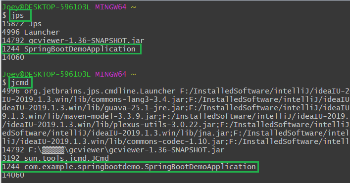
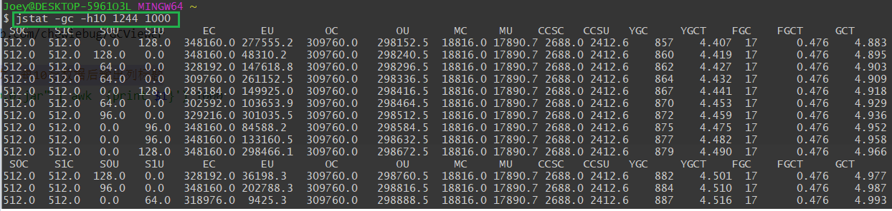
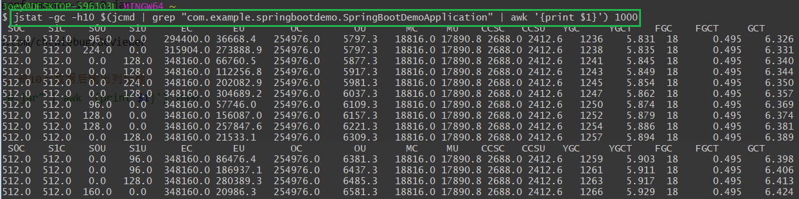
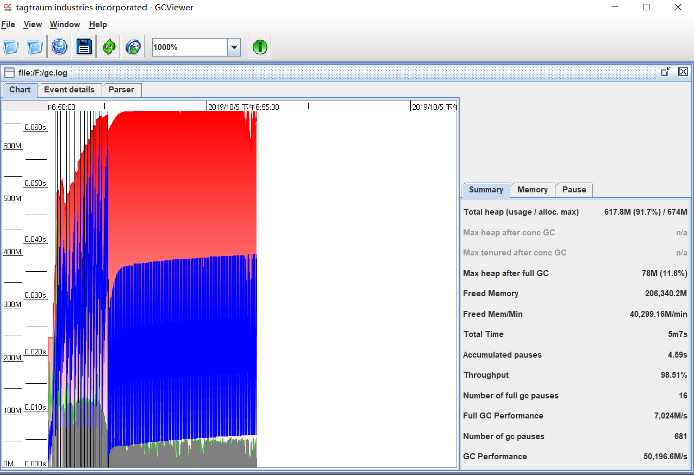
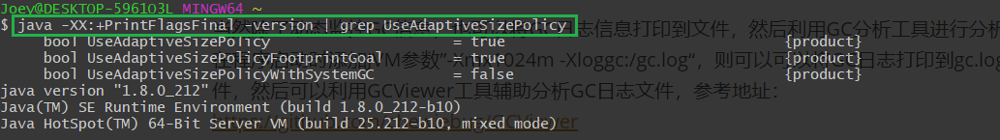
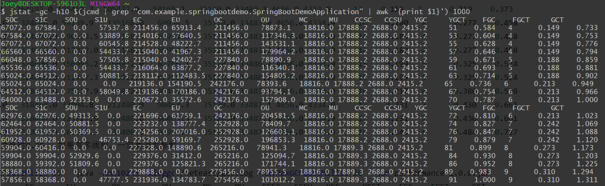

原文连接:https://www.cnblogs.com/coding-diary/p/11815961.html
调优基本概念
在调整JVM性能时，通常有三个组件需要考虑：
- 堆大小调整
- 垃圾收集器调整
- JIT编译器
大多数调优选项都与调整堆大小和选择合适的垃圾收集器有关，JIT编译器对性能也有很大影响，但很少需要对其进行调优，尤其是针对较新版本的JVM。
通常，在进行Java程序调优的时候，会重点关注两个主要指标：
- 响应性：应用程序对请求进行响应的速度，对于专注响应性的应用程序，长时间的暂停是不可接受的，需要在最短时间内做出响应
- 吞吐量：侧重于在特定时间内最大化应用程序的工作量，对于专注于吞吐量的应用程序，符合要求的暂停是可以接受的。
JVM本身是在不断优化的，系统瓶颈的核心还是在于应用代码，更多的情况下还是要专注于应用代码的优化。
常用JVM参数
| 参数 | 描述 |
|---|---|
| -XX:+AlwaysPreTouch | JVM启动时分配内存，堆的每个页面都在初始化期间按需置零，而不是在应用程序执行期间递增 |
| -XX:Errorfile = filename | 错误日志 |
| -XX:+TraceClassLoading | 跟踪类加载信息 |
| -XX:+PrintClassHistogram | 按下Ctrl+Break后打印类信息 |
| -Xmx -Xms | 最大堆 最小堆 |
| -xx:permSize | 永久代大小 |
| -xx:metaspaceSize | 元数据空间大小 |
| -XX:+HeapDumpOnOutOfMemoryError | 当抛出OOM时进行HeapDump |
| -XX:+HeapDumpPath | OOM时堆导出的路径 |
| -XX:OnOutOfMemoryError | 当发生OOM时执行用户指定的命令 |
命令： java -XX:+PrintFlagsFinal -version 会 打印所有的-XX参数及其默认值
GC调优思路
- 分析场景，如：启动速度慢，偶尔出现响应慢于平均水平或出现卡顿
- 确定目标，如：内存占用，低延时，吞吐量
- 收集日志，如：通过参数配置收集GC日志，通过JDK工具查看GC状态
- 分析日志，如：使用工具辅助分析日志，查看GC次数，GC时间
- 调整参数，如：切换垃圾收集器或者调整垃圾收集器参数
常用GC参数
| 参数 | 描述 |
|---|---|
| -XX:ParallelGCThreads | 并行GC线程数量 |
| -XX:ConcGcThreads | 并发GC线程数量 |
| -XX:MaxGCPauseMillis | 最大停顿时间，单位毫秒，GC尽力保证回收时间不超过设定值 |
| -XX:GCTimeRatio | 垃圾收集时间占总时间的比值，取值0-100，默认99，即最大允许1%的时间做GC |
| -XX:SurvivorRatio | 设置eden区大小和survivor区大小的比例，8表示两个survivor:eden=2:8，即一个survivor占年轻代的1/10 |
| -XX:NewRatio | 新生代和老年代的比，4表示新生代:老年代=1:4，即年轻代占堆的1/5 |
| -verbose:gc，-XX:+PrintGC | 打印GC的简要信息 |
| -XX:+PrintGCDetails | 打印GC详细信息（JDK9之后不再使用） |
| -XX:+PrintGCTimeStamps | 打印GC发生的时间戳（JDK9之后不再使用） |
| -Xloggc:log/gc.log | 指定GC log的位置，以文件输出 |
| -XX:PrintHeapAtGC | 每次GC后都打印堆信息 |
垃圾收集器Parallel参数调优
Parallel垃圾收集器在JDK8中是JVM默认的垃圾收集器，它是以吞吐量优先的垃圾收集器。其可调节的参数如下：
| 参数 | 描述 |
|---|---|
| -XX:+UseParallelGC | 新生代使用并行垃圾收集器 |
| -XX:+UseParallelOldGC | 老年代使用并行垃圾收集器 |
| -XX:ParallelGCThreads | 设置用于垃圾回收的线程数 |
| -XX:+UseAdaptiveSizePolicy | 打开自适应GC策略 |
垃圾收集器CMS参数调优
CMS垃圾收集器是一个响应时间优先的垃圾收集器，Parallel收集器无法满足应用程序延迟要求时再考虑使用CMS垃圾收集器，从JDK9开始CMS收集器已不建议使用，默认用的是G1垃圾收集器。
| 参数 | 描述 |
|---|---|
| -XX:+UseConcMarkSweepGC | 新生代使用并行收集器，老年代使用CMS+串行收集器 |
| -XX:+UseParNewGC | 新生代使用并行收集器，老年代CMS收集器默认开启 |
| -XX:CMSInitiatingOccupanyFraction | 设置触发GC的阈值，默认68%，如果内存预留空间不够，就会引起concurrent mode failure |
| -XX:+UseCMSCompactAtFullCollection | Full GC后，进行一次整理，整理过程是独占的，会引起停顿时间变长 |
| -XX:+CMSFullGCsBeforeCompaction | 设置进行几次Full GC后进行一次碎片整理 |
| -XX:+CMSClassUnloadingEnabled | 允许对类元数据进行回收 |
| -XX:+UseCMSInitiatingOccupanyOnly | 表示只在达到阈值的时候才进行CMS回收 |
| -XX:+CMSIncrementalMode | 使用增量模式，比较适合单CPU |
垃圾收集器G1参数调优
G1收集器是一个兼顾吞吐量和响应时间的收集器，如果是大堆（如堆的大小超过6GB）,堆的使用率超过50%，GC延迟要求稳定且可预测的低于0.5秒，建议使用G1收集器。
| 参数 | 描述 |
|---|---|
| -XX:G1HeapRegionSize | 设置Region大小，默认heap/2000 |
| -XX:G1MixedGCLiveThresholdPercent | 老年代依靠Mixed GC, 触发阈值 |
| -XX:G1OldSetRegionThresholdPercent | 定多包含在一次Mixed GC中的Region比例 |
| -XX:+ClassUnloadingWithConcurrentMark | G1增加默认开启，在并发标记阶段结束后，JVM即进行类型卸载 |
| -XX:G1NewSizePercent | 新生代的最小比例 |
| -XX:G1MaxNewSizePercent | 新生代的最大比列 |
| -XX:G1MixedGCCountTraget | Mixed GC数量控制 |
调优示例
示例代码：
@SpringBootApplication
public class SpringBootDemoApplication {
public static void main(String[] args) {
SpringApplication.run(SpringBootDemoApplication.class, args);
Executors.newScheduledThreadPool(1)
.scheduleAtFixedRate(
() -> {
new Thread(
() -> {
for (int i = 0; i < 150; i++) {
try {
byte[] temp = new byte[1024 * 512];
Thread.sleep(new Random().nextInt(1000));
} catch (InterruptedException e) {
e.printStackTrace();
}
}
})
.start();
},
100,
100,
TimeUnit.MILLISECONDS);
}
}
GC分析主要查看GC导致的Stop The World的时间，它会导致程序的延时增加。
示例代码运行的时候建议指定其堆内存的最大值，启动时添加JVM参数-Xmx1024m。程序运行起来之后可以利用jps或者jcmd产看运行的程序进程号。

拿到进程号之后利用jstat命令查看GC信息，如动态监控GC统计信息，间隔1000毫秒统计一次，每10行数据后输出列标题：

上述两个步骤也可以合并成一个 jstat -gc -h10 $(jcmd | grep “com.example.springbootdemo.SpringBootDemoApplication” | awk ‘{print $1}’) 1000

当然除了动态监控GC信息，也可以将GC日志信息打印到文件，然后利用GC分析工具进行分析。
在程序启动时添加JVM参数”-Xmx1024m -Xloggc:/gc.log“，则可以可以将GC日志打印到gc.log文件，然后可以利用GCViewer工具辅助分析GC日志文件，参考地址：https://github.com/chewiebug/GCViewer
GCViewer下载后双击gcviewer-x.xx-SNAPSHOT.jar文件即可运行，然后将gc.log日志文件导入即可观察GC信息。

GC调优之前，我们需要了解当前JVM参数的信息。命令 java -XX:+PrintFlagsFinal -version 会打印所有的JVM参数，如需查看指定参数，如查看UseAdaptiveSizePolicy的值可以使用 java -XX:+PrintFlagsFinal -version | grep UseAdaptiveSizePolicy

调整-XX:ParallelGCThreads的值可以指定GC并发的线程数，如在JVM启动参数中可以添加 “-Xmx1024m -XX:ParallelGCThreads=4”，调节GC并发的线程数，观察GC的信息，如Full GC次数FGC，Full GC的总时间FGCT，GC的总时间GCT等进行调优。

同样我们可以在JVM启动参数中指定-XX:MaxGCPauseMills，使用G1收集器-XX:+UseG1GC等，调节JVM启动参数，收集GC日志，更具监控进行相应的调节，进而找到最优值。